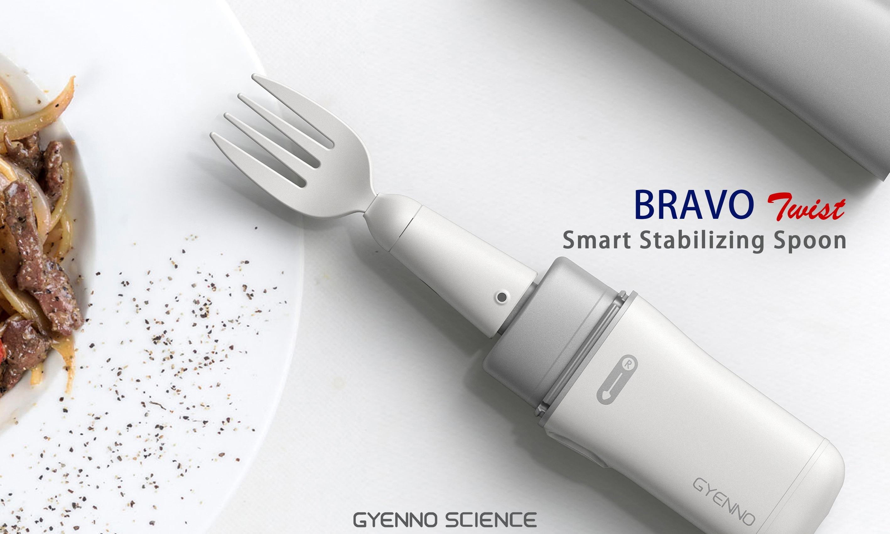

A empresa Lift Labs ganhou notoriedade ao criar o Liftware, um dispositivo acoplado a uma colher para que pessoas com Mal de Parkinson possam se alimentar melhor. A invenção chamou a atenção do Google, que, nessa quarta-feira (10), anunciou a aquisição da fabricante. O talher produz vibrações contrárias de modo a neutralizar os tremores de quem sofre da doença.
O suporte da colher inteligente é constituído por um microchip e sensores que são capazes de detectar a direção e a força das oscilações involuntárias da mão do usuário. Com essas informações, o motor do Liftware vibra na direção oposta para contrabalançar os tremores.
O produto está baseado em tecnologias semelhantes às usadas para reduzir tremores em câmeras fotográficas e anular os movimentos da mão do usuário. Dessa forma, o Liftware deixa o talher estável, e o usuário não derruba a comida. Segundo a Lift Labs, o acessório é capaz de reduzir o efeito dos tremores em até 70%.
A equipe responsável pelo produto se juntará ao Google X, a ala da companhia responsável pela criação de tecnologias mais ambiciosas. Essa divisão está por trás de alguns dos conceitos mais inovadores dos últimos anos, como o Google Glass e o carro inteligente.
Nos últimos tempos, o Google tem investido cada vez mais em biotecnologia. Em 2013, por exemplo, a gigante de buscas comprou a Calico, uma empresa de desenvolvimento de remédios para expandir a expectativa de vida.
Outros projetos do Google X incluem lentes de contato inteligentes para medir os níveis de glicose nas lágrimas de diabéticos e o Baseline, um programa de voluntários para estudar a fundo como funciona o corpo humano para descobrir novas formas de prever doenças.
A tecnologia de cancelamento de tremores do Liftware é capaz de melhorar a vida de milhões de pessoas, afirmou um porta voz do Google. “Nós estamos procurando novas formas de entender e gerenciar as doenças neurodegenerativas”, acrescentou. Confira o vídeo de demonstração do Liftware.